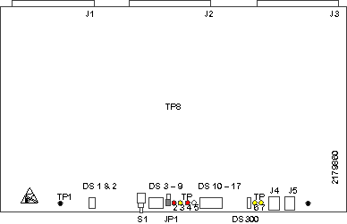

Operating Documentation
Direction 5114043-800, Rev# 9
LightSpeed 3.X Service Methods (Advanced)
Operating Documentation |
The HEMRC Control Board (High Efficiency Motor Rotor Control), performs three main functions. It provides an interface between the OBC and the HEMRC, HVDC Bus voltage monitoring, and a CAN interface between the OBC and future subsystems.
Illustration 1: 2179860 HEMRC Board

| TP1: (BLK) LGND | Logic ground |
| TP2: (RED) +5V | +5 V supply voltage |
| TP3: (YEL) MUX | Analog signal as selected by the muxes |
| TP4: (RED) +15V | +15 V supply voltage |
| TP5: (WHT) -15V | -15 V supply voltage |
| TP6: (YEL) +10V | +10 V Reference |
| TP7: (YEL) DCV | DC rail monitor voltage. Scale: 100 V/V |
| TP8: (BLK) SGND | Signal ground |
| DS1: (YEL) LORPM | Indicates HEMRC output frequency is below programmed threshold |
| DS2: (YEL) LOV | Indicates the DC Rail is less than 470 V. |
| DS3: (RED) HIV | Indicates a DC Rail overvoltage (> 670 V) detected. |
| DS4: (RED) GFLT | Indicates a fault on a Gantry CAN based subsystem. |
| DS5: (GRN) G1TX | Indicates Gantry CAN 1 is transmitting. |
| DS6: (GRN) G2TX | Indicates Gantry CAN 2 is transmitting. |
| DS7: (GRN) GRX | Indicates GCAN is receiving. |
| DS8: (GRN) HRX | Indicates HEMRC CAN is receiving. |
| DS9: (RED) HFLT | General. Function defined by firmware. |
| DS10: (GRN) | General. Function defined by firmware. |
| DS11: (GRN) | General. Function defined by firmware. |
| DS12: (GRN) | General. Function defined by firmware. |
| DS13: (GRN) | General. Function defined by firmware. |
| DS14: (GRN) | General. Function defined by firmware. |
| DS15: (GRN) | General. Function defined by firmware. |
| DS16: (GRN) | General. Function defined by firmware. |
| DS17: (GRN) | General. Function defined by firmware. |
| DS300: (GRN) G12V | Indicates that GCAN_+12V_ISO is present. |
The maximum output of the PDU can be determined by the OBC by reading the location of this jumper. This jumper location indicates whether or not the PDU has a DCRGS.
JUMPER POSITION
A = Selects voltage limits for systems with a DCRGS. (This is the default shipping position).
B = Selects voltage limits for systems with an Unregulated HVDC Supply. This is the proper position for use with the CT scanner.
The jumper plug is a four position “shorting” plug that is installed in either the J4 or J5 CAN loopback connector. This jumper plug location selects whether the unit is in the normal or diagnostic CAN mode.
JUMPER PLUG
J5 = (Normal) Selects normal CAN operation where the HEMRC CAN and Gantry CAN are connected to their respective CAN networks. (This is the default shipping position).
J4 = (Loopback) Selects diagnostic CAN mode where the HEMRC CAN and Gantry CAN networks are connected together.
S1: RESET Resets all command, fault and interrupt latches on this board, and also creates a GCAN_RESET signal that is sent to downstream controllers via the control interface bus connections.